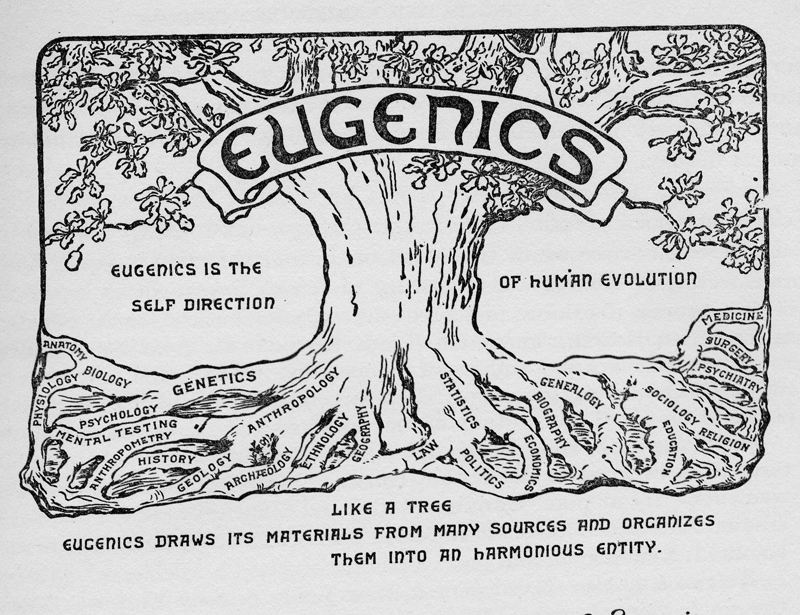

Jordan Hall was named after Harvey E. Jordan. A medical professor, the dean of the University of Virginia’s School of Medicine, and a prominent eugenicist, Jordan was a controversial figure. Jordan was well-known for arguing for the inherent superiority of the white race; in one paper, he attempts to provide a scientific argument for the supremacy of Caucasian ancestry – he even goes so far as to argue that those of mixed race were superior to just African Americans, because at least they had some Caucasian ancestry. He was a member of the “Anglo Saxons Club”, which helped push for the 1924 Racial Integrity Act, which forbade interracial marriage. As horrifying as this may appear today, this was a prominently held belief at the time; eugenics was taught as a social theory at the University of Virginia, and there were even state laws making it possible for the state to force what they deemed “unfit” people to be sterilized. From 1927 to 1979, about 8,300 Virginians were forcibly sterilized. Jordan is a representation of a bygone era, a way of thinking we have trouble acknowledging today.
|  |
In 1913, Harvey E. Jordan published a paper entited The Biological Status and Social Worth of the Mulatto. In it, he discusses the "mulatto problem" which the United States has (ie. the rising number of people with mixed African American / anglosaxon ancestory).
Read the PaperPeter Hardin, a dispatch correspondent with the Washington Times, writes about the history of eugenics in Virginia in an article titled, Segregation's Era of Science: Eugenics Alters Lives. The article mentions Jordan as a leading eugenist in Virginia.
Read the Article